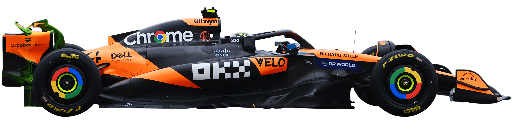
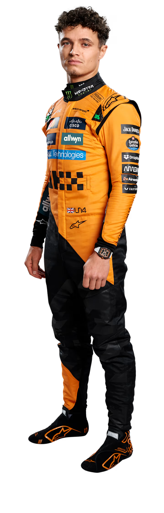
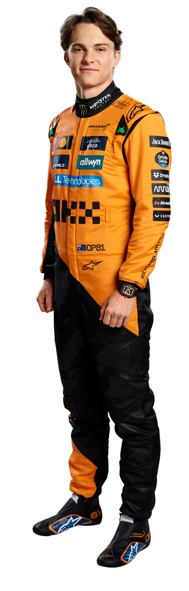

Desde que entrou no desporto em 1966, sob a orientação e o esforço incansável do seu fundador homónimo, Bruce, o sucesso da McLaren tem sido simplesmente impressionante. Cinco brilhantes décadas renderam inúmeras vitórias, poles e pódios, sem mencionar nove campeonatos de construtores. Além disso, alguns dos maiores pilotos da história da Fórmula 1 fizeram o seu nome na equipa, incluindo Emerson Fittipaldi, Ayrton Senna, Mika Hakkinen e Lewis Hamilton...